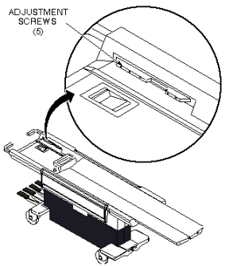

Operating Documentation
Direction 5440001-3, Rev# 6
Signa HDxt Service Methods
Module Version 4.0, Version Date 9/29/08
Operating Documentation |
| Required Persons | Preliminary Reqs | Procedure | Finalization |
|---|---|---|---|
| 1 | Not Applicable | 15 mins | Not Applicable |
This procedure is applicable to the following table products:
Signa Lightweight Patient Transport Table
Signa Oncology Patient Transport Table Option
Signa OR-Compatible Patient Transport Table Option
The cradle is locked in home position on the Patient Transport by a latch in the cradle which engages a notch in the cradle guide strip near the end of the Patient Transport. The cradle should be able to just engage this notch, without extra force, when pushed to home position on the table top, yet it must engage it tight enough so the table top will not move on the Patient Transport when it is undocked.
Refer to procedure in Removing Cradle Assembly, to partially remove cradle from table top.
Loosen five screws securing guide rail and slide guide rail forward or backward as required. Tighten screws. See Illustration 1.
Illustration 1: CRADLE GUIDE RAIL LATCH MOD

No finalization steps.